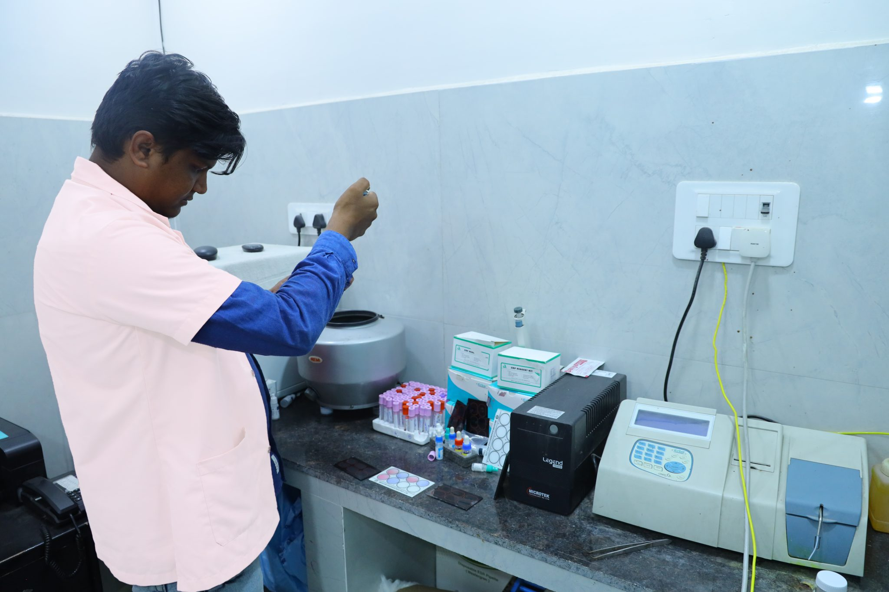
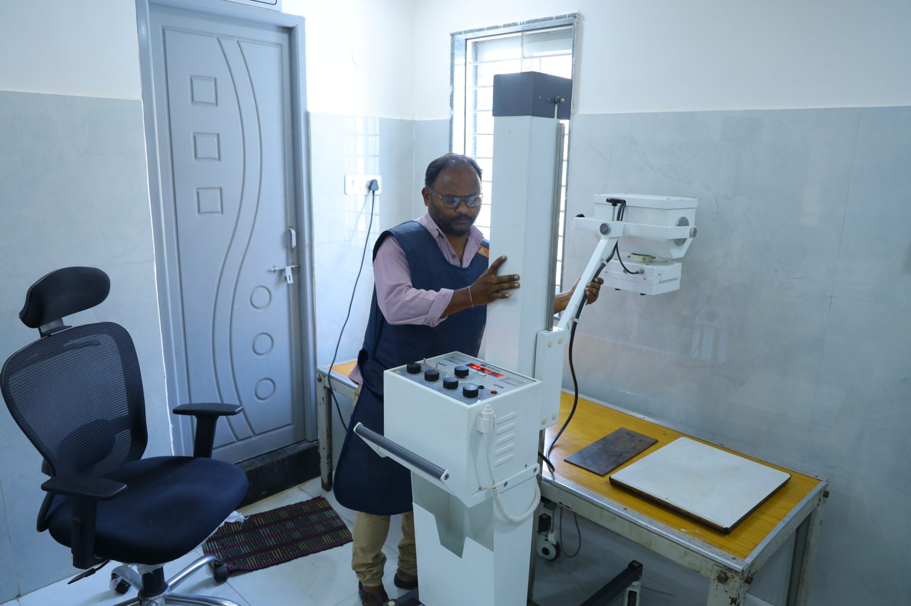

At Rishika Mother and Child Hospital, our Advanced Level 3 NICU is dedicated to providing the highest quality care for critically ill newborns. Equipped with cutting-edge technology and a team of skilled neonatologists, we offer round-the-clock monitoring and specialized treatments. Every baby receives personalized care tailored to their specific needs. Our compassionate team ensures a safe, supportive environment for both infants and families.Trust Rishika Mother and Child Hospital to provide exceptional care during your baby’s most vulnerable moments
A Commitment to Excellence: We prioritize continuous care, ensuring that each newborn receives the best medical attention, nurturing recovery, and growth.